Muy pronto en un planeta cerca de ti.
Una cura contra el cáncer que llega a tiempo para ti. Viajes espaciales que no estén reservados a los multimillonarios. Una gran escuela en cada pueblo de la Tierra. Material deportivo tan avanzado que reescribe los récords, y cada niño protagonista de su propia historia junto a su superhéroe favorito. Niños más seguros y con más confianza al otro lado de cada teléfono. Trenes más rápidos que los aviones sin que lo pague el planeta, y un clima que por fin empieza a sanar.
Los próximos 25 años podrían transformar nuestro mundo para mejor, y cada uno de esos futuros llega con la misma factura eléctrica. Necesitan energía asequible y limpia, suministrada de forma segura y a una escala que el mundo nunca ha construido. #TheNext25 es como lo conseguiremos.
Lo estamos construyendo hoy para nosotros, mañana para ellos.
Porque una generación es la unidad honesta y esencial del cambio.
Veinticinco años es la distancia entre el niño que ve esta película y el adulto que dirigirá el laboratorio, pilotará la misión o capitaneará el equipo. Cada promesa de esta página puede medirse por el camino, en nuevas conexiones, energía más limpia y ciudades que nunca se quedan a oscuras. Es un cambio real, visible y generacional.
Por eso no dijimos «el futuro». Le pusimos fecha.
Diez mundos que cambiarán en los próximos 25 años
Alguien a quien conocer y una historia que leer en cada mundo del sitio, y todo acaba en la misma subestación. Elige por dónde empezar y profundiza en el tema.
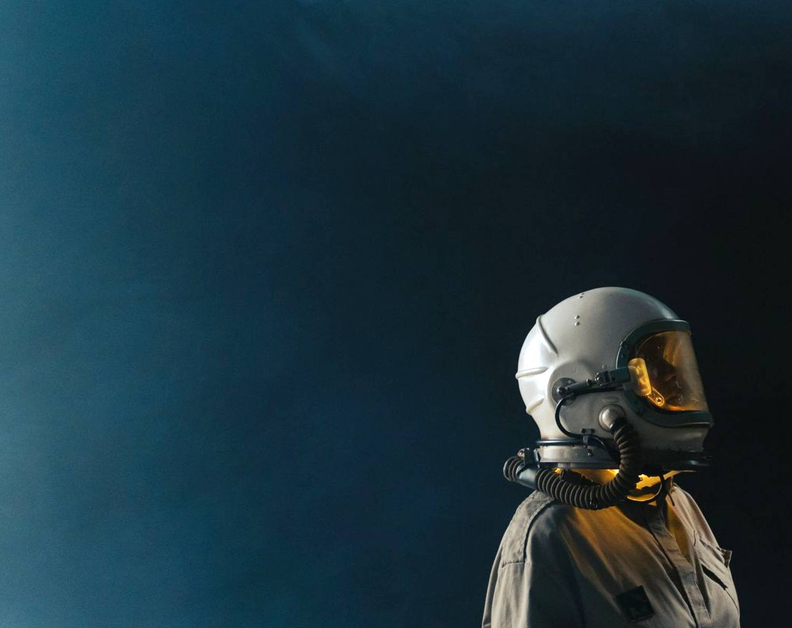
El cohete lleva piezas nuestras. El Gran Colisionador de Hadrones también.
El espacio y la red son ya el mismo sistema. Cada uno puede hacer caer al otro.
Entrar en Espacio → Página del tema · todas las historiasConoce a Aisha Bowe, la científica de cohetes que prepara el viaje de tus hijos a la órbita
La NASA quiere energía nuclear en la Luna en 2030. La equivalente a unas setenta y cinco viviendas, y alguien tiene que cablearla.
Perfil · 6 min →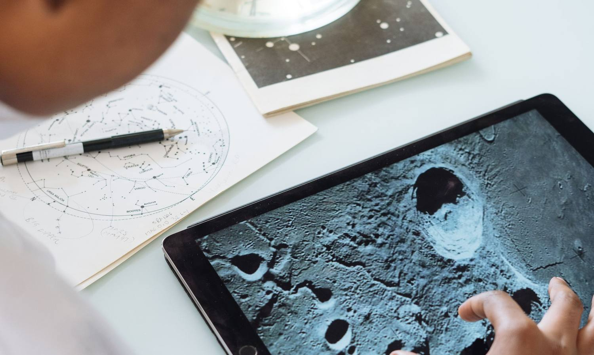
El espacio y la red son ya el mismo sistema
Llegar a la órbita es un 90% más barato. La relación funciona en ambos sentidos.
Lectura · 8 min →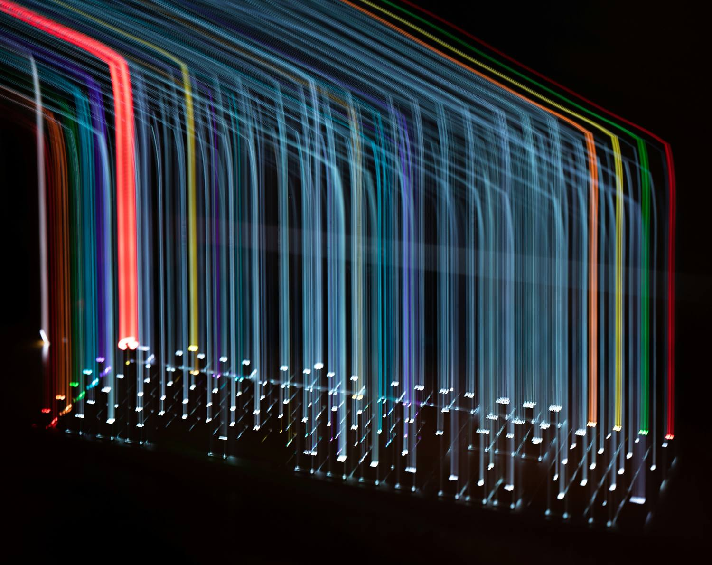
El verdadero cuello de botella de la IA no son los datos ni los chips. Es la energía.
Cada pregunta que haces llega a un edificio que consume la energía de una pequeña ciudad.
Entrar en Datos e IA → Página del tema · todas las historiasConoce a Tony, cuyo lanzamiento de videojuego necesita su propia subestación
En 2030 los centros de datos consumirán más electricidad que Japón. Cada sesión y cada consulta acaban en algún punto de la red.
Perfil · 5 min →Por qué tu consulta a la IA acaba en una subestación
Un toque, y la respuesta vuelve a través del cobre, los transformadores y una subestación.
Lectura · 6 min →Un edificio que no puede permitirse ni un parpadeo.
Una vida puede depender de que una resonancia magnética mantenga su calibración, o de que una vacuna nunca supere los ocho grados.
Entrar en Salud → Página del tema · todas las historias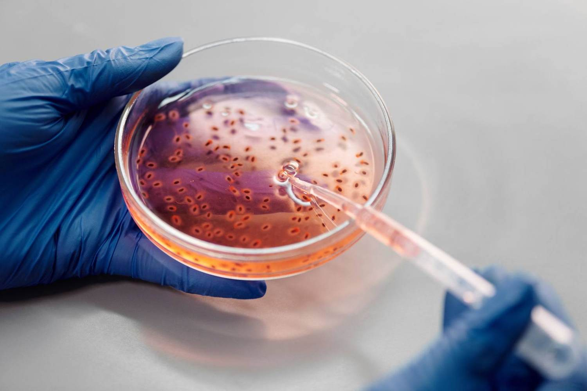
Conoce a la oncóloga que quiere convertir la quimioterapia en una pieza de museo
Mil laboratorios oncológicos funcionan con energía limpia, segura y asequible, y ninguno puede permitirse ni un parpadeo.
Perfil · 6 min →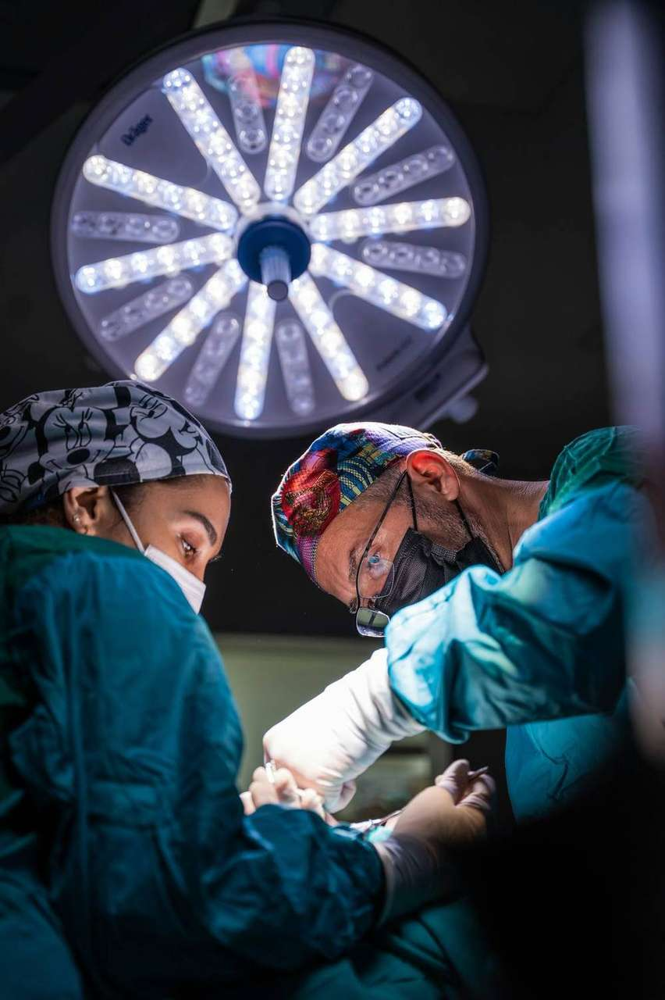
El hospital de 2050: cómo será y con qué funcionará
El edificio en el que se tratará a tus hijos, y con qué funcionará.
Lectura · 5 min →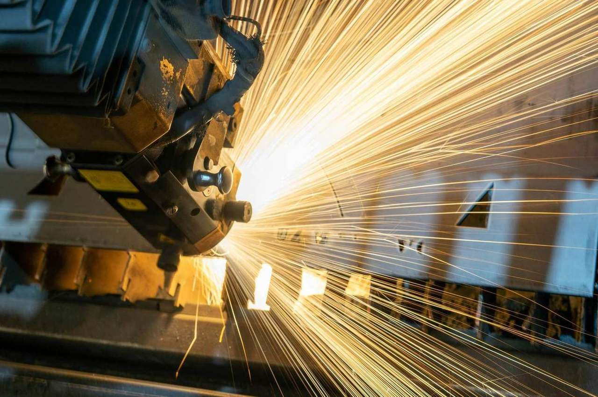
Todo lo que te rodea se hizo con fuego. Eso se acaba.
El acero del puente, el cemento bajo la calle: todo a punto de fabricarse con electricidad.
Entrar en Industria → Página del tema · todas las historias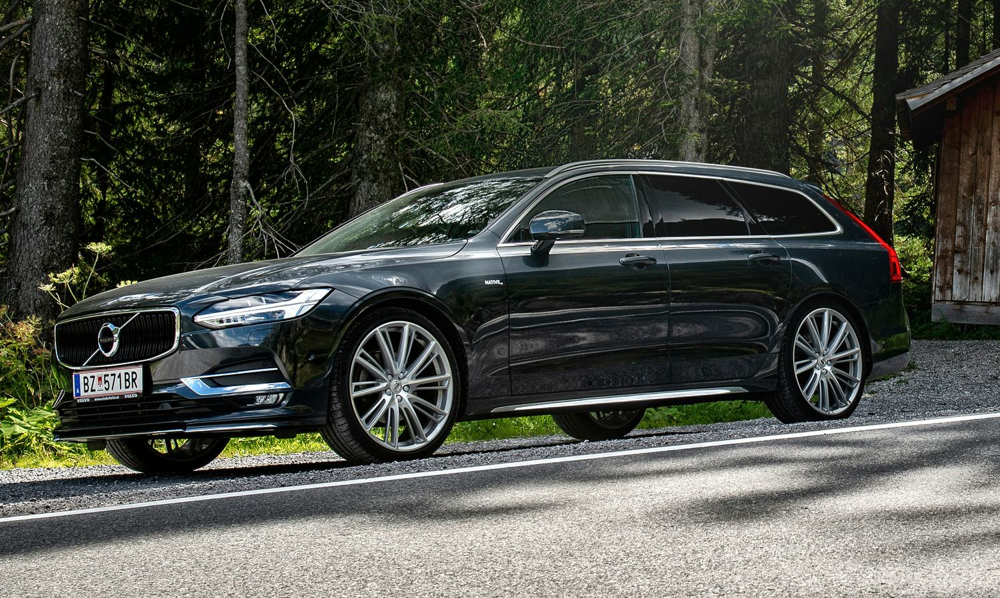
Conoce a las personas que fabrican Volvos en una fábrica que funciona con lo mismo que los coches
Los coches y la planta que los fabrica funcionan ahora con lo mismo.
Perfil · 5 min →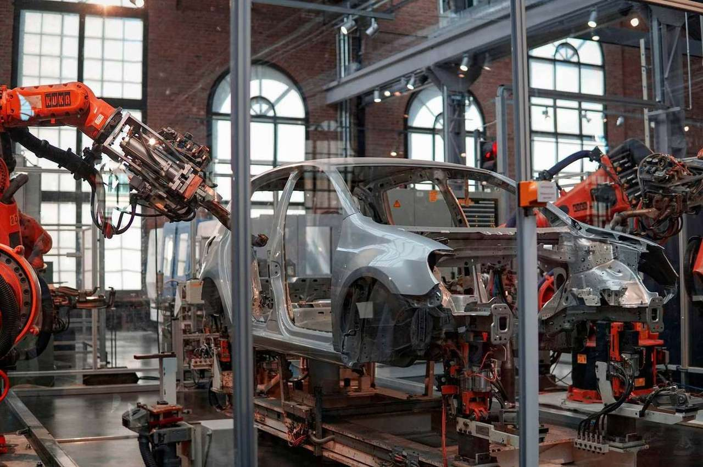
Del horno al enchufe: así se electrifica la industria pesada
Descarbonizar la industria pesada, sector a sector, sin apagar las luces.
Lectura · 4 min →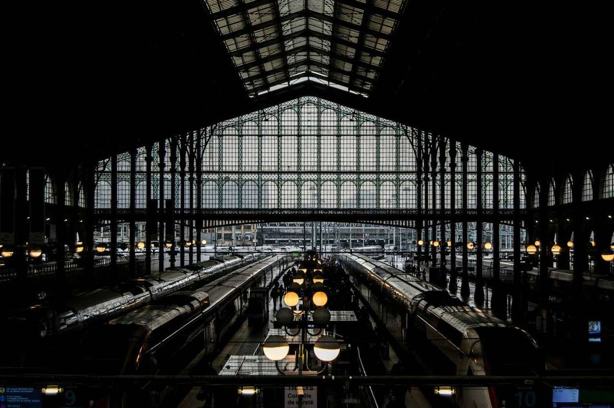
Seis millones de pasajeros al día. Lo llaman el Lifeline.
El próximo salto en la demanda de electricidad vendrá de todo lo que se mueve.
Entrar en Transporte → Página del tema · todas las historias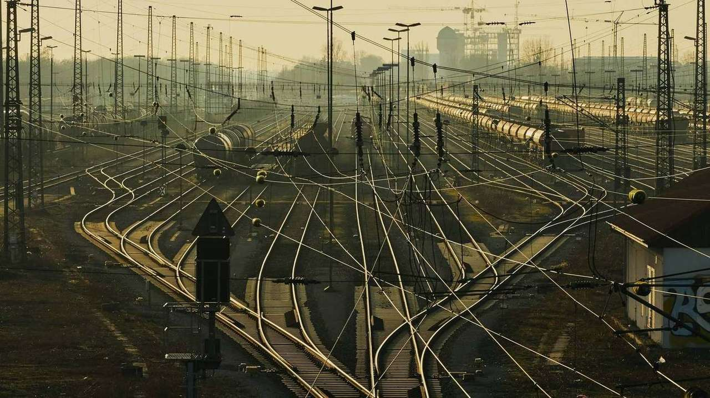
Conoce a los ingenieros de Hitachi Rail que construyen el tren más rápido que el avión
Seis millones de pasajeros al día, en la línea a la que llaman el Lifeline.
Perfil · 5 min →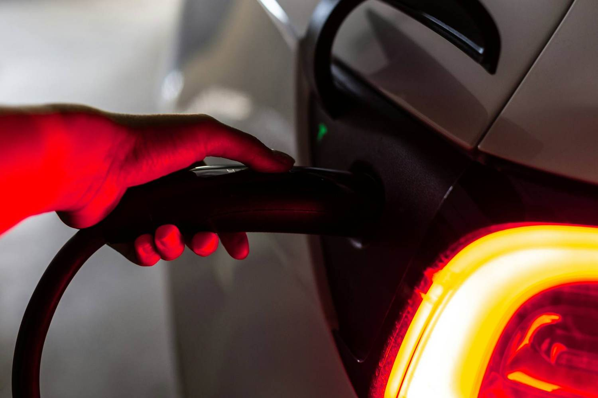
Uno de cada cuatro coches nuevos es eléctrico. ¿De dónde sale la energía?
Cada carga tiene que venir de algún sitio, y ese sitio es la red.
Lectura · 4 min →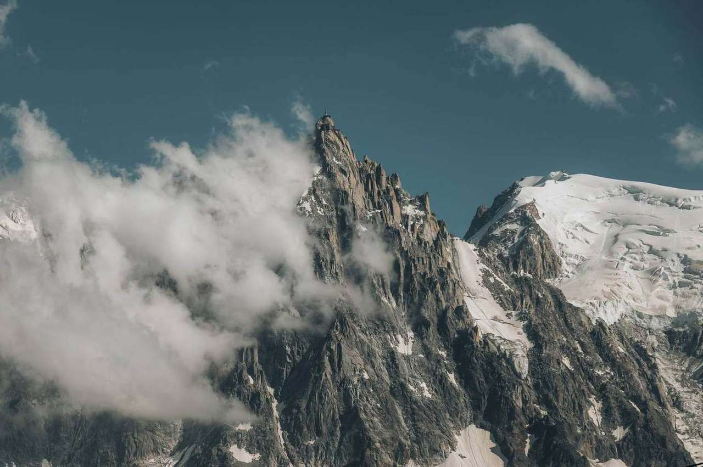
Los lugares más difíciles de alcanzar son los que más merece la pena alcanzar.
El mejor viento está en los peores sitios. Aquí es donde el transporte de energía se convierte en justicia.
Entrar en Fronteras → Página del tema · todas las historias
Conoce a los isleños que están a punto de conectarse al continente
El mapa olvida algunos lugares. La red no tiene por qué hacerlo.
Perfil · 5 min →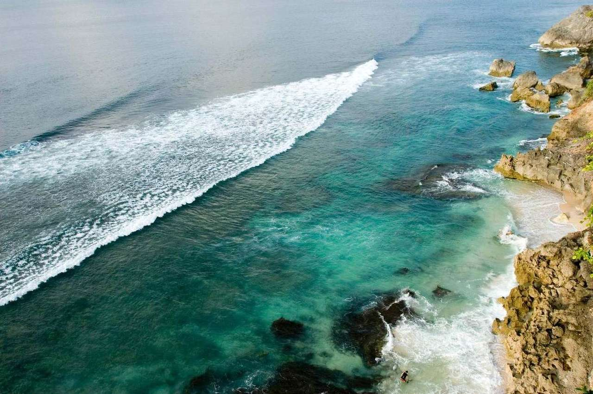
No hay montaña lo bastante alta: cómo llega la energía a los lugares que el mapa olvida
El mejor viento está en los peores sitios. Llevarlo a una ciudad es la verdadera hazaña.
Lectura · 5 min →
El mayor consumo eléctrico nuevo del siglo es el que mantiene a la gente con vida.
Mantenerse frescos es la mayor demanda nueva de la red, y llega cuando la red está más exigida.
Entrar en Clima → Página del tema · todas las historias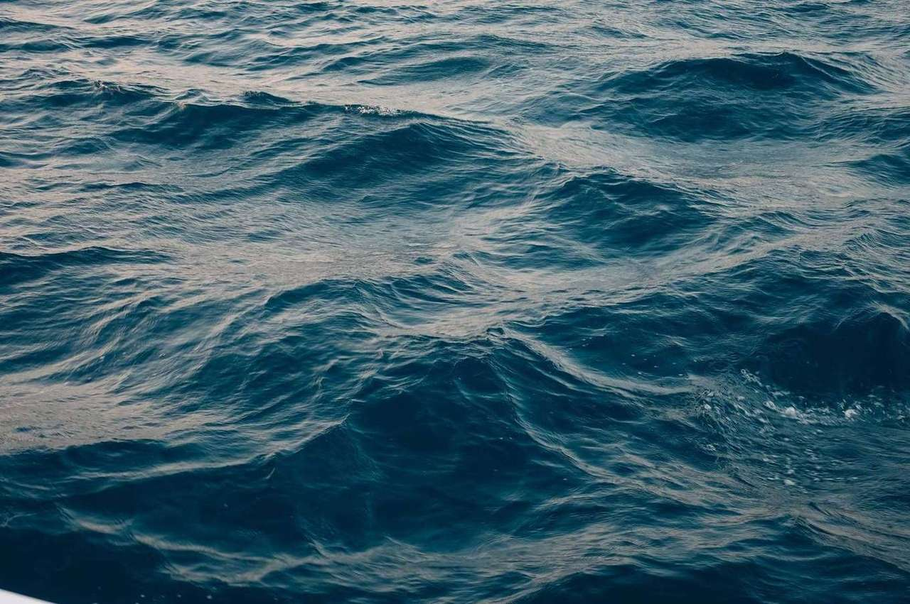
Conoce al equipo que, a 130 kilómetros mar adentro, mantiene conectado un gran parque eólico
A ciento treinta kilómetros de la costa, y el enlace con tierra tiene que aguantar.
Perfil · 6 min →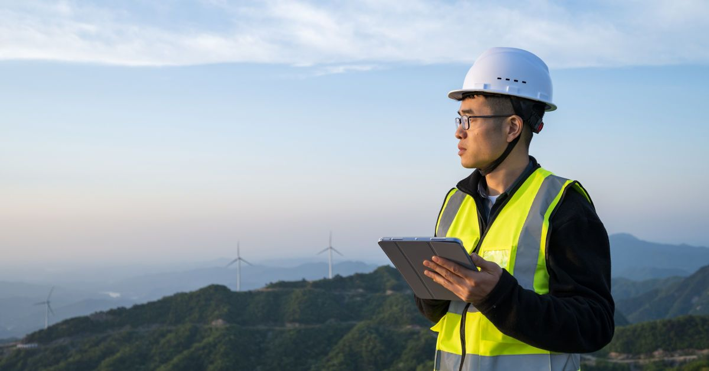
El año en que la energía limpia superó al carbón
Y el año en que Gran Bretaña desperdició viento suficiente para abastecer a Londres.
Lectura · 6 min →
La cocina pierde su llama.
Cocinar ha significado fuego durante cuatrocientos mil años, y está a punto de dejar de serlo.
Entrar en Alimentación → Página del tema · todas las historias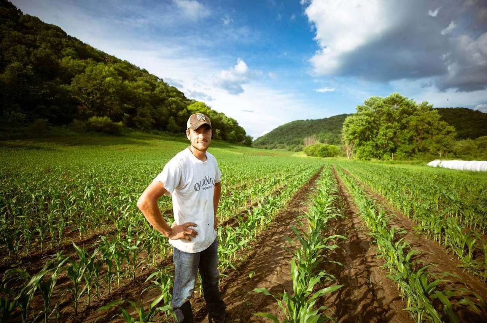
Conoce a los agricultores estadounidenses que alimentan nuestras mesas
La cena empieza en una granja que ahora genera además de cultivar.
Perfil · 5 min →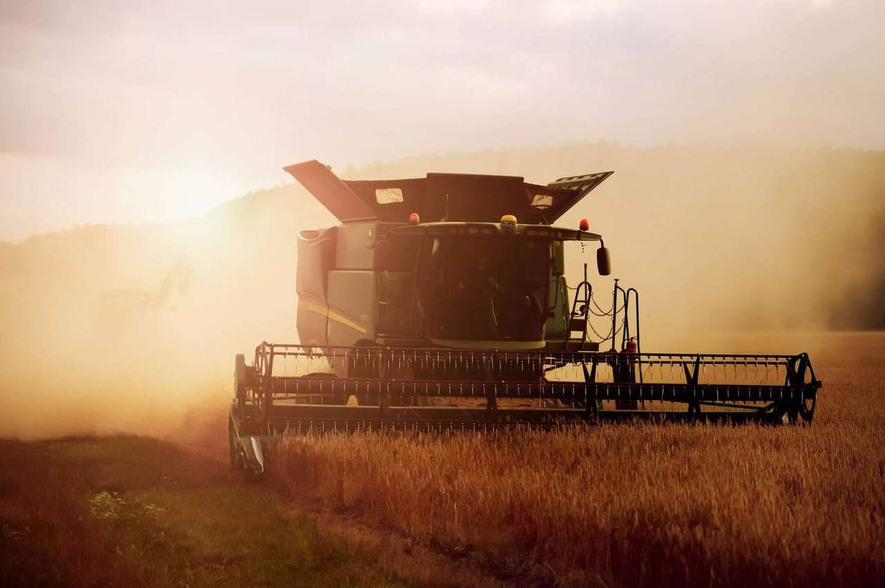
El granero que también es una central eléctrica
Cultivar bajo paneles solares, y lo que eso hace a la cosecha.
Lectura · 5 min →
Sabemos construir la red. Nos estamos quedando sin personas para construirla.
La electricidad es ya el mayor empleador energético del mundo, y no consigue contratar lo bastante rápido.
Entrar en Educación → Página del tema · todas las historias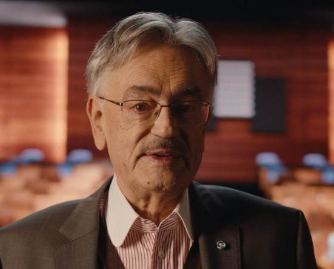
Conoce a Wolfgang, el profesor que conecta a trescientos millones de personas
Cada escuela de la lista pasa de dar clase solo con luz natural a una jornada completa.
Perfil · 6 min →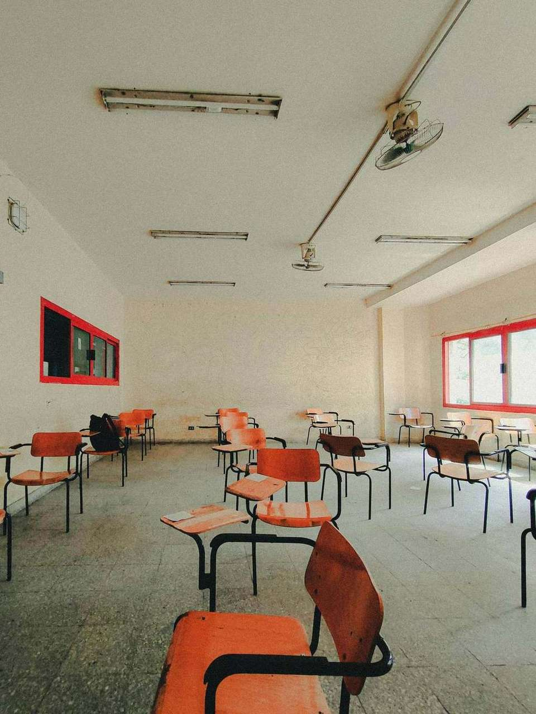
Nos estamos quedando sin personas para construirla
2,4 trabajadores se jubilan por cada nuevo profesional menor de 25 años.
Lectura · 7 min →Las voces de la transición
Voces de la ciencia, la empresa y el deporte que piden un mundo impulsado por electricidad limpia y abundante.
Giulia Gwinn y el FC Bayern femenino
«En el campo, la energía lo es todo».
Deporte · Mira la películaEl profesor Herrmann
Dar voz al planeta, y a la ciencia que hay detrás de la red.
Ciencia · De la películaJanna Ensthaler
Representando la escala y la ambición de la transición.
Empresa · De la películaLo que está en marcha y lo que viene
La misión se hace pública a lo largo de 2026, y las historias llegan con ella. Se actualiza con cada momento.
La era empieza ahora
El momento de la declaración y la presentación de la colaboración con el FC Bayern femenino.
Impulsando el progreso
500 líderes afrontan el problema de capacidad y la demanda impulsada por la IA.
Abriendo camino
Donde la política, la empresa y la sociedad se encuentran para que la red sea de todos.
El valor como catalizador
Invertir antes de tener certezas, construir capacidad antes de que la crisis lo exija.
Los ingenieros se reúnen
La cumbre técnica de la comunidad de redes, donde se diseñan los próximos 25 años.
El crecimiento necesita una red
Los mercados emergentes marcan el ritmo de la era de la electricidad.
Las infraestructuras como multiplicador
La red, presentada como el multiplicador económico de los próximos 25 años.
El año de la energía
Lo que demostró el primer año de The Next 25, y lo que viene ahora.
Una misión. Veinticinco años. No te pierdas ni un capítulo.
Recibe cada nueva historia y cada momento de The Next 25 directamente en tu correo. Sin ruido, solo hechos.